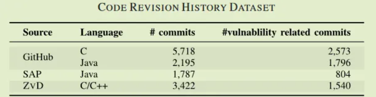
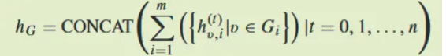
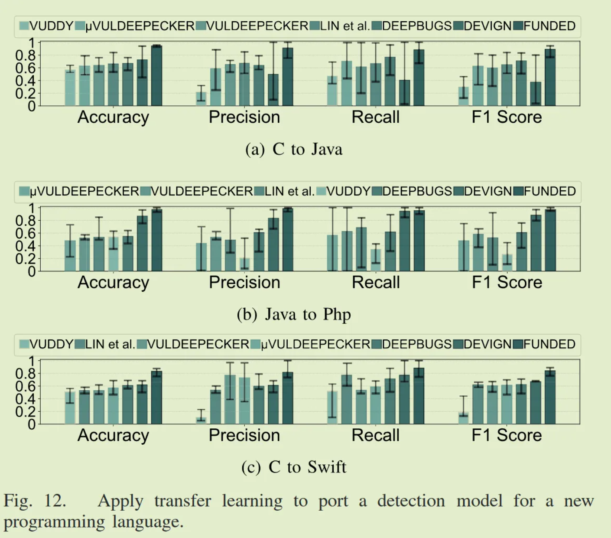

Combining Graph-Based Learning With Automated Data Collection for Code Vulnerability Detection
下面分享一篇我发表在安全学术圈上的论文笔记。原文
原文标题：Combining Graph-Based Learning With Automated Data Collection for Code Vulnerability Detection
原文作者：Huanting Wang , Guixin Ye , Zhanyong Tang , Shin Hwei Tan, Songfang Huang, Dingyi Fang, Member, IEEE, Yansong Feng, Lizhong Bian, and Zheng Wang
发表期刊：IEEE Transactions on Information Forensics and Security
原文链接：https://ieeexplore.ieee.org/document/9293321/
笔记作者：senu11@SecQuan
笔记小编：ourren@SecQuan
1.简介
文章提出了一种用于构建漏洞检测模型的新型学习框架FUNDED（Flow-sensitive vUlNerability code Detection）。与将程序视为顺序序列或无类型图不同，FUNDED 学习和操作程序源代码的图形表示，其中各个语句通过关系边连接到其他语句；通过捕获程序语法、语义和流程，FUNDED 为漏洞检测提供代码表示；将概率学习和统计评估相结合，自动从开源项目中收集训练样本。该系统从程序源代码中识别函数级别的软件漏洞。使用 C、Java、Swift 和 Php 编写的程序评估 FUNDED，并将其与六个最先进的代码漏洞检测模型进行比较，FUNDED 在评估设置方面明显优于其他方法。
2.数据集 & 项目
代码：https://github.com/HuantWang/FUNDED_NISL
数据集：https://drive.google.com/drive/folders/1WFFV8uGi8oXpzYORyiqRCYyqJGiHSbZL
文章在两种类型的数据集上评估 FUNDED。在四种语言(C, Java, Php, Swift.)编写的代码样本上评估漏洞检测模型(3.1.节)，使用 C 和 Java 作为主要编程语言的项目的代码修订历史测试专家混合模型（3.2.节）。
上表给出了这个数据集的详细信息，总共 150950 个函数级别的样本，源语言为 C、Java、Php 和 Swift,样本中有一半是阳性（易受攻击的）代码样本， 其为在 CWE 2019 中定义的前 5 到前 30 名的软件错误（例如，“缓冲区溢出”、“越界读/写”、“NULL 指针取消引用”）。数据集由 SARD 、NVD 和托管在 GitHub 上的开源项目构建。使用 SARD 和 NVD 提供的补丁版本作为负（无漏洞）代码示例；对于从GitHub上收集到的漏洞样本，应用相应的补丁commit来获取无漏洞版本。

从上表可以看出，该数据集包括来自 GitHub 以及 SAP 和 ZVD 的总共 6713 个与漏洞相关的代码修订。在来自 GitHub 的 4369 个漏洞相关commit中，有 2071 个是通过 CVE 和 NVD 链接建立的，其余 2298 个来自 GitHub 上最受欢迎的前 1000 个项目，其中以 C 和 Java 为主要编程语言。对于后者，手动检查并标记commit以建立基本事实。SAP 和 ZVD 数据集已经包含负样本。应用相同的方法从 GitHub 获得负面commit，即保留已通过 RE(3.2.2.1节) 过滤器但通过手动检查发现与漏洞无关的代码commit。共有 13,122 个代码commit样本，其中包含与漏洞相关和无关的commit。
3.系统架构
FUNDED 由两个关键部分组成。第一个是基于 GNN 的改进模型，用于识别源代码漏洞。第二个是自动框架，从GitHub收集易受攻击的代码样本，为学习漏洞检测模型提供额外的训练数据。
3.1.漏洞检测模型
漏洞检测模型建立在原文提出的改进GNN之上。该模型将目标函数的源代码作为输入；然后通过组合从抽象语法树 (AST) 和程序控制和依赖图 (PCDG) 中提取的信息来构建程序图。程序结构为有向图，语句、标识符和 immediate values为节点，两个节点之间的直接关系为一条边。一对节点可能存在多种关系，使用关系图来记录每种类型的关系。关系图被编码为程序图矩阵。文章的GNN 采用程序矩阵和初始节点表示来学习嵌入，嵌入被传递到下游神经网络以进行预测。
3.1.1.模型架构
图 3 是漏洞检测模型的工作流程，以目标程序的源代码（即函数）作为输入。使用标准编译解析器构建代码的 AST，并使用控制和数据流以及诸如令牌序列的顺序信息来扩展 AST；扩展的 AST 为有向图，其中语句、标识符、代码块或值是图节点，直接关系为边。一对节点可能存在多种关系，使用关系图来记录每种关系（总共九种关系）。关系图的节点连通性被编码为邻接矩阵。
3.1.2.改进的GNN
基于原作者团队最近的工作，原文扩展了门控图神经网络 (GGNN)，对从源代码中提取的多个代码关系进行建模。扩展的 GGNN 由四个基于门控循环单元 (GRU) 的堆叠嵌入模型组成，可跨关系图合并更高程度的邻域。采用关系图的邻接矩阵和初始节点表示来学习全局嵌入向量，然后将其传递到标准的全连接网络进入softmax层分类。
3.1.3.关系图
3.1.3.1.代码预处理
使用一致的命名方案重写变量名。此步骤确保程序中的琐碎语义差异（例如变量名称的选择）不会影响token嵌入的选择。图 4(a) 显示了应用于图 1 所示示例的源代码重写。
3.1.3.2.程序图
程序图是由包含语法节点（即编程语言语法中的非终结符，例如 if 语句或函数声明的 AST 节点）和语法token（标识符名称和常量值等终结符）的 AST（为了构建 AST，对 Java 使用 Soot，对 Swift 和 Php 使用 ANTLR，对 C/C++ 使用 Joern。） 构建的。标准 AST 只有子边用于编码两个 AST 节点之间的父子关系。为了捕获额外的语法、数据和控制信息，按照 Learning to represent programs with graphs中描述的方法向 AST 添加了八种额外类型的边。如下所述。
Data and control flows.将从 PCDG 提取的数据和控制路径集成到 AST。
GuardedBy.使用 GuardedBy 边将变量的每个 AST token连接到变量的封闭保护表达式。例如，对于图 4(a) 中的 if 语句，从 d 和 free(a) 添加一条 GuardedBy 边到 !strcmp() 对应的 AST 节点。 这可能有助于确定操作数的错误顺序。
Jump.使用跳转边将变量与控制依赖关系连接起来。 GuardedBy 和 Jump 边允许记录发散控制流的关系。这种关系对于捕获漏洞的控制和数据流模式很重要，例如图 1 中给出的“双重释放”示例和“CWE-413：不正确的资源锁定”。
ComputedFrom.对于每个赋值，v = expr，使用 ComputedFrom 边将 v 连接到出现在表达式 expr 中的所有变量token。该边捕获变量或缓冲区的使用位置，可用于检测“NULL 指针取消引用”等漏洞。
NextToken.由于标准 AST 子父边不会对语法节点的子节点产生顺序，因此添加 NextToken 边以将每个语法token连接到它的后继节点。可捕获语句的操作码和操作数的顺序。此类信息对于“CWE-404：资源关闭或释放不当”等漏洞类型很有用，因为它捕获了 API 使用和释放的顺序。
LastUse and LastLexicalUse.使用 LastUse 边连接相同变量的所有使用以捕获变量的使用，其中一个特殊情况是 if 语句中的变量，使用 LastLexicalUse 边连接此类变量。例如，对于图 4(a) 中的 if 语句，链接循环头中出现的 c 及其使用位置。通过记录上次使用变量或缓冲区的时间，这种关系有助于识别“双重释放”等漏洞。图 4(b) 显示了处理图 4(a) 中给出的代码后的增强 AST。
第八个边呢？（没在原文瞅到）
3.1.3.3.关系图
将扩展 AST 的关系存储在单独的关系图中——上述九种关系（？？？）中的每一种关系图。关系图是一个有向图 G =
3.1.4.图节点表示
使用 word2vec 将每个关系图节点（例如 Stmt）和token嵌入。用于将单词和token映射到值的嵌入表和 word2vec 是根据训练代码语料库构建的，该语料库由节点类型和从训练程序收集的token组成；由于变量和函数名称以及常量值可以是任意长度，将其编码为token（即字母、符号和数字）。
为了捕获类型信息，将变量、常量和函数的（返回）类型的嵌入与 AST 节点名称表示连接起来，并将其传递给线性层以获得初始值图中每个节点的表示。
3.1.5.多关系图学习
给定邻接矩阵和初始节点嵌入，多关系 GNN 在整个关系图上生成 100 维特征的全局一维嵌入。
3.1.5.1.邻域聚合
使用邻域聚合方案（图 5a）来更新节点嵌入。图节点 v 的 100 维嵌入向量 $h_v$ 由嵌入层通过递归聚合和转换其相邻节点的表示向量来计算。节点通过将它们的当前状态（即嵌入向量）作为消息发送给沿边的所有邻居来交换信息。在每个节点消息被聚合，然后用于更新下一个嵌入层（即下一次迭代）的关联节点表示。在重复更新节点状态的过程进行固定次数的迭代后，使用读出函数将节点状态聚合到单个嵌入向量中。
3.1.5.2.多关系模型
与标准 GNN 不同，该模型跨多个关系图传播和聚合信息。如图 5b 所示，首先，使用可学习的、关系特定的函数通过邻域聚合来计算各个关系图的新图状态来实现这一点；然后，应用 GRU 单元来聚合和更新跨关系图的相同节点的状态。使用前向传播来更新关系图的顶点 v 的状态 $h_v^t$ 以获得新状态 $h_v^{(t+1)}$：
其中$A_t$是节点u和v之间的直接边，$W_t$和GRU是可学习的参数，初始状态$h_v^0$使用word2vec创建
受自然语言处理中使用公路门来控制噪声传播的启发，在作者团队提出的 GGNN (也即改进GNN)中采用了layer-wise公路门：
其中 $h_v^{(t)}$ 是第 t + 1 层的输入并获得新状态$h_v^{‘(t+1)}$ ； sigma 是一个 sigmoid 函数； · 是逐元素乘法； $W_T^{(t)}$ 和 $b_T^{(t)}$ 分别是门 $T(h_v^{(t)})$ 的权重矩阵和偏置向量。
3.1.5.3.读出函数
在跨多个嵌入层执行邻域聚合过程后，为每个token获得另一组嵌入。为了表示整个程序，使用读出函数连接所有邻域聚合迭代和嵌入层的图表示，以形成输出向量 $h_G$ 作为 m 关系图 $G_i$ 的全局程序表示：

t=0,1,,,n,是邻域聚合迭代。给定单个节点嵌入，此读出函数生成 m 个关系图的全局嵌入。
3.1.6.训练GGNN
本文的 GGNN 使用来自标准漏洞数据库（ CVE 和 NVD）的训练样本和3.2.节描述的数据收集框架收集的开源代码示例进行离线训练，然后可以将学习到的模型应用于未见过的程序。
在分批训练样本上训练 GGNN，其中每批包含正样本和负样本。由于目标是最小化两个概率分布（预测的和实际的）之间的距离，故选择交叉熵损失作为目标函数。使用学习率为 0.001 的小批量随机梯度下降 (SGD) 和 Adam 算法。当损失小于 0.005 或达到最大 100 个训练周期时，训练终止。
3.2.自动收集训练数据框架
自动训练数据收集框架由一组专家预测模型驱动，每个专家预测模型独立预测每一次commit是否为该项目提供补丁。通过识别与漏洞相关的commit，可以通过检查补丁带来的变化来定位上一版本的哪些代码段也即函数可能导致漏洞，然后将识别出的代码段用作易受攻击的代码训练示例。
每个专家模型都将一组特征（表 II）作为输入，这些特征是从提交消息和提交之间的代码更改（参见表 I）中获得的，然后它预测目标代码修订是否提供漏洞补丁。所有专家模型都使用标记的训练样本进行离线训练。
3.2.1.专家混合模型
图 6 为专家混合模型的架构，由五个分类器组成：support vector machine (SVM), random forests (RF), k-nearest neighbor (KNN), logistic regression (LR) and gradient boosting (GB).
表 I 为 GitHub 上托管的 Linux 内核的两个提交。第一次提交 (C1) 修复了 NULL 指针漏洞，第二次提交 (C2) 修复了性能问题但未修复漏洞。现有方法（VCCFINDER 和 ZHOU 等人）可能会错误地将表 I 中的第二个修订token为漏洞相关提交，因为提交消息包含关键字“check”和“NULL”。为避免此类错误，应用共形预测 (CP) 来量化每个专家模型对提交的预测的置信度，并且仅在相信模型的结果时才考虑预测，然后使用多数表决方案来汇总剩余的预测以生成结果。
3.2.2.专家模型的训练数据
3.2.2.1.收集代码修改训练样本
使用相同的训练数据集来训练每个专家模型。训练数据由两个来源构成，第一个是 CVE 和 NVD 报告的提交日志和补丁，第二个是从 GitHub 上托管的开源项目中提取的提交日志和补丁，例如表 I 中给出的示例。
CVE 和 NVD 的日志已经与已知漏洞相关联，可以直接使用。为了从 GitHub 收集数据，考虑了 1,000 个主要编程语言为 C 或 Java 的项目。应用一组从 Automated identification of security issues from commit messages and bug reports,扩展而来的正则表达式 (RE) 规则来选择可能与漏洞相关的提交。
为了简化提取漏洞代码示例的过程，当前的实现仅考虑一次修改一个源文件的代码修订。收集初始代码修订样本后，手动确定代码提交中报告的漏洞是否已在 CVE 中发布,若在则使用 CVE 编号与公开的 CVE 描述建立链接；否则，手动提取包含漏洞的代码段、提交日志和问题报告（如果有）。手动标记所有通过 RE 规则的代码修改是否与漏洞相关。然后使用标记的样本作为训练数据。使用了超过 3,000 个手动标记的代码提交来训练专家模型。这个人工检查过程只需要执行一次来训练模型，学习到的模型可以用来收集更多的样本。
3.2.2.2.特征提取
使用表 II 中给出的三种类型的特征来捕获开源项目的质量和代码提交的目的。提交消息描述了代码修改的原因——是否与漏洞修复相关，以及漏洞类型。
使用预训练的 word2vec 网络，将提交消息和修改后的代码语句映射到嵌入向量中。生成的嵌入与项目质量和活动的特征值放在一起形成聚合特征向量。
3.2.3.专家模型训练
3.2.3.1.训练每个专家模型
训练数据用于确定每个专家模型的最佳超参数。每个训练样本都包含一个数值特征向量和一个标签，该标签指示代码修订样本是否用于修复代码漏洞。对于训练，只需为专家模型提供训练数据，它就会执行其内部监督学习算法。
3.2.3.2.置信度评估
应用 CP 来捕获输入 x 的类标签 y（即是否与漏洞相关或不相关）的“奇怪性”（称为不合格度量），通过使用特定于模型的不合格函数 A(x, y, h) , 来估计模型 h 的不合格分数来实现,为 PyCP 中给出的默认特定方法的不合格函数。直观上，专家模型定义的特征空间上的异常模式将比更常见的模式获得更大的不合格分数。
为了计算统计置信度，预留了 10% 的模型训练数据作为校准集（不用于训练专家模型）。离线计算校准分数 $a1^{y^{p}}$,$a_2^{y^{p}}$ ,…,$a_n^{y^{p}}$ ，方法是通过模型 h 为每个类别标签y给出的概率 ($y^p$) 将函数 A 应用于校准集中的 n 个实例中的每一个。给定一个新输入 $x{n+1}$，使用函数 A 计算一致性分数 $a{n+1}^{y^{p}}$,然后计算 p 值 pv,对于$x{n+1}$ ：
若 p 值较小（接近其下限 1/(n + 1)），则预测非常不合格（离群值）。如果它很大（接近其上限 1），则预测非常符合。如果预测的 p 值大于 1 − c (c 是一个可配置的显着水平,本文根据经验设置为 0.3）)，只考虑预测。
3.2.4.专家模型应用
图 7 描述了收集和标记开源代码样本的过程。首先，使用GitHub API 自动爬取排名靠前项目的代码提交；然后应用 RE 规则来选择可能与漏洞相关的代码提交；
1.标记代码提交
首先应用离线训练的专家模型来预测通过 RE 过滤器的代码修订是否与代码漏洞修复相关；再使用特征提取器来处理收集到的代码提交日志、补丁和项目相关信息，以形成特征向量；然后给定特征值，每个专家模型预测代码修订是否与漏洞修复相关。为了在多个分类器（专家模型）之间达成共识，应用 CP 来估计每个专家输出的不合格分数，保留不合格分数高于置信水平的输出；然后根据对剩余输出的简单多数投票做出最终共识。
2.提取代码样本
对于通过 RE 过滤器的每个代码提交，使用代码更改来定位修补函数的先前版本,然后提取这个函数的代码，并将其与专家模型(作者在原文中将上述一组专家模型称为专家委员会)给出是否存在漏洞的标签相关联。
3.持续学习
使用 CP 的优势之一是可以用可信度较低的样本来随着时间的推移改进专家模型。
4.实验
对于漏洞检测，将 FUNDED 与六种相关方法进行比较：VULDEEPECKER、μVULDEEPECKER、LIN 等、 VUDDY、 DEEPBUGS 和 DEVIGN；前三个建立在 BiLSTM 之上，VUDDY 使用散列函数来发现易受攻击的代码克隆，DEEPBUGS 利用前馈神经网络进行错误检测，DEVIGN 使用标准 GNN 在具有非类型化 AST 边缘的图形表示上运行。除了 μVULDEEPECKER 之外，所有竞争方案都做出二元决策来预测代码是否包含错误或漏洞。
使用五重交叉验证来评估各自数据集上的所有方法(除非另有说明),该标准方法评估预测模型的泛化能力。另外四个常见指标：Accuracy、Precision、Recall、F1 score
除了好看的之外，在 FFmpeg、ImageMagick 和 Linux 内核中各有一个 FUNDED 未能检测到但可以被其他人识别的漏洞，这种漏洞是由滥用 API 参数引起的，FUNDED 使用的 word2vec 模型不会捕获此类模式，这个问题可以通过使用更好的语言嵌入模型来解决。

在这个实验中，首先为一种语言训练一个基线模型;然后，应用迁移学习，使用交叉验证将基线模型移植到另一种语言：C to Java、Java to Php , C to Swift，其中第一个是基线模型训练的语言，第二个是要定位的新语言。下图表明，FUNDED 可以更好地利用先验知识来检测新编程语言的软件漏洞，这是因为 FUNDED 捕获了易受攻击代码模式的大部分与语言无关的信息，此功能对于训练样本稀缺的语言或库很有用。

下图为数据收集框架评估
基线模型额外的比较
数据标记模型的实验

漏洞类型预测准确度前三：
扩展AST的比较
嵌入比较
训练开销比较